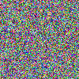
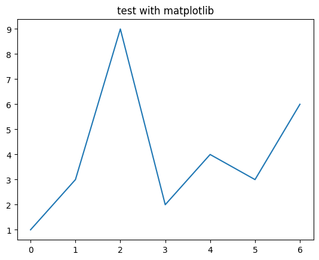

# Used only in tests
from fastcore.test import *Implementation details
NOTE: we use default_exp __init__ in order to enable this as soon as you import the module.
WARNING: cells magic are striped out during documentation generation; this is the reason why there is the same cell magic as comment too.
WARNING: the official IPython.display.Code syntax hilighter don’t seems to work. We’re creating a “drop-in” replacement that force full=True in HtmlFormatter. This seems to work properly and give us more control on code display. For details see: https://github.com/ipython/ipython/blob/72bb67ee8f57cb347ba358cce786c3fa87c470b9/IPython/lib/display.py#L667
Support classes
MessageBox
MessageBox (data, background_color, text_color, emoji=None)
Initialize self. See help(type(self)) for accurate signature.
# test against html injection
mb = MessageBox('<script>alert(1)</script>', background_color='red', text_color='black')
test_eq('<script>' in mb._repr_html_(), True) # Escaped = GOOD
test_eq('<script>' in mb._repr_html_(), False) # No raw script = GOOD
del mb # we need to manually cleanup because we don't have %%testcell ;-)# Simulate rendering inside jupyter
display(skip_message_box)
display(testcell_message_box)
display(noglobals_message_box)
This cell has been skipped
testcell
testcell noglobals
# Simulate rendering into console
[print(o.__repr__()) for o in [skip_message_box,testcell_message_box,noglobals_message_box]];ℹ️ This cell has been skipped
🟡 testcell
🟢 testcell noglobalsSkipped because it don’t show the
from IPython.display import Code
Correct colors in jupyter but don’t get exported properly and pollutes each cell with a copy of css
from pygments.formatters import HtmlFormatter from pygments import highlight from pygments.lexers import PythonLexer from IPython.display import HTML
class Code: def init(self, data=None, url=None, filename=None, language=None): self.data = data # NOTE: skipping other arguments, we’re keeling them only for backward compatibility def repr_html(self): return highlight(self.data, PythonLexer(), HtmlFormatter(full=True)) def repr(self): return self.data
Code
Code (data=None, url=None, filename=None, language='python')
Initialize self. See help(type(self)) for accurate signature.
# test rendering inside jupyter
Code('''
# This is a comment
class A:
def b(self): return 1
def c(): return 3
''')
# This is a comment
class A:
def b(self): return 1
def c(): return 3# test rendering in console
print(Code('''
# This is a comment
class A:
def b(self): return 1
def c(): return 3
''').__repr__())
# This is a comment
class A:
def b(self): return 1
def c(): return 3
Valid arguments
parse_args
parse_args (x)
test_eq(parse_args(''),set())
test_eq(parse_args('verbose dryrun'),{'dryrun', 'verbose'})
test_eq(parse_args('verbose dryrun '),{'dryrun', 'verbose'})
test_fail(lambda:parse_args('verbose dryrun xxx yyy'),contains='Invalid arguments passed')Parse testcell arguments string
parse_testcell_args
parse_testcell_args (x:str)
test_eq(parse_testcell_args('dryrun verbose '),TestcellArgs({'dryrun','verbose'},None))
test_eq(parse_testcell_args('dryrun verbose (a,b)'),TestcellArgs({'dryrun','verbose'},Inout(['a','b'],[])))
test_eq(parse_testcell_args('dryrun verbose (a,b) ->(c)'),TestcellArgs({'dryrun','verbose'},Inout(['a','b'],['c'])))
test_fail(lambda:parse_testcell_args('dryrun verbose (a,b) ->c'), contains='Invalid arguments passed')Main function
testcell
testcell (line, cell, local_ns)
Here are some notes on the implementation of the main testcell function: + @needs_local_scope: adding this annotation will add the local_ns argument to the cell magic. We’ll use this dictionary instead of globals() to access notebook state. + arr is an intemediate structure used to easily modify the source code. + wrapped_cell will contain the final code that will be executed. + As far as I know, if the result (aka last line) of a cell is None, nothing is displayed, so the statement if _ is not None: display(_) tries to mimic this behavior when noreturn is added. + we use _locals={'_':None} to hide that variable and avoiding it get modified in _global scope.
IMPORTANT: explicitly injectiong _globals in exec is very important because the default behaviour may be different across multiple versions of IPython/Jupyter.
Let’s define %%testcelln: a shortcut to %%testcell noglobals
testcelln
testcelln (line, cell, local_ns)
from fastcore.test import *Test variable scope
aaa = "I'm in global scope"# %%testcell
aaa_in_globals = 'aaa' in globals().keys()
print(f'"aaa" variable is in global namespace: {aaa_in_globals}')
assert aaa_in_globals"aaa" variable is in global namespace: True# %%testcelln
aaa_in_globals = 'aaa' in globals().keys()
print(f'"aaa" variable is in global namespace: {aaa_in_globals}')
assert not aaa_in_globals"aaa" variable is in global namespace: Falsedel aaaTest noreturn
_= '???' # let's initialize with a known value to ensure no midificaiton is happening# %%testcell noreturn
a = 1; a1test_eq(_,'???') # Ensures last testno changes to last cell result `_`# %%testcell
a = 1; a1test_eq(_,'???') # `testcelln` will behave like `testcell noresult`# %%testcell
a = 1; a1test_eq(_,1) # If we let the return flow `_` will get modifiedStandard use cases
Common use case when you want to seamlessly display the output of a computation
# %%testcell
a=1
a=a+3
a4Last cell results has been updated as expectedn
assert _==4 # last cell resultDespite this seems to be a normal cell variable a is not part of the global scope.
assert 'a' not in locals()If the last statement is a display or a print it works in any case. The trick is that both these instructions are actually functions that returns None, so for the way jupyter cells works there will be no out[] block.
# %%testcell
a=1
a=a+4
display(a)5assert _==None # this is correct because both display and print returns none.
assert display('display returns none') == None
assert print('print returns none') == None'display returns none'print returns noneAll major use cases should be covered:
# %%testcell
# simple inline
a=1; a1test_eq(_,1)# %%testcell
# complex inline
a=1; {'value': a,
'note': 'complex multi line statement'}{'value': 1, 'note': 'complex multi line statement'}test_eq(_,{'value': 1, 'note': 'complex multi line statement'})assert 'a' not in locals() # After all these tests `a` is still not inside globalsOther available options
This magic supports the following options:
noglobals: this runs the cell in a completely isolated environmentverbose: it prints out the code before executing itdryrun: just print the code without executing it
Here are the examples
# %%testcell noglobals
the_locals = locals().keys()
print(f'locals() = {the_locals}')
assert list(the_locals)==[] # no locals!
the_globals = globals().keys()
print(f'globals() = {the_globals}')
assert list(the_globals)==['__builtins__'] # only standard pythonlocals() = dict_keys([])
globals() = dict_keys(['__builtins__'])# %%testcell verbose
b=3
b### BEGIN
def _test_cell_():
# %%testcell verbose
b=3
return b # %%testcell
try:
_ = _test_cell_()
finally:
del _test_cell_
_ # This will be added to global scope
### END3test_eq(_,3) # verbose display the code and execute it# %%testcell dryrun
b=1
b
assert False # we should not be here because code is supposed to not be executed### BEGIN
def _test_cell_():
# %%testcell dryrun
b=1
b
assert False # we should not be here because code is supposed to not be executed
try:
_ = _test_cell_()
finally:
del _test_cell_
if _ is not None: display(_)
### ENDFinally it properly works with any kind od displayable output too:
# %%testcell skip
assert False # This should not be triggered
This cell has been skipped
# %%testcell banner
from IPython.display import Markdown
Markdown('''This shows a contextual banner, use: `testcell.global_use_banner=True` to always show the banner''')
testcell
This shows a contextual banner, use: testcell.global_use_banner=True to always show the banner
# %%testcelln banner
from IPython.display import Markdown
Markdown('''This is a banner for noglobals''')
testcell noglobals
This is a banner for noglobals
# test imports
from PIL import Image
import numpy
import matplotlib.pyplot as plt# %%testcell
rng = numpy.random.default_rng(1234)
arr = rng.uniform(size=( 100,100,3)) * 255
img = Image.fromarray(arr.astype('uint8')).convert('RGB')
assert 'img' in locals()
img
NOTE: PIL.Imagehas a dedicated __repr__ dunder that jupyter will use to proeprly display it.
# Out of the test cell `img` has been removed
assert 'img' not in locals()# %%testcell
plt.plot([1,3,9,2,4,3,6])
plt.title('test with matplotlib');
Even Matplotlib figures are properly displayed.
noreturn option
This is a pretty advanced use case: noreturn option ensures that no trace is left after cell execution; despite you see some output after the cell execution, this is only “displayed” but the last result placeholder _ is not updated. This is useful when you’re playing around with big abjects and you don’t want them to pollute neither that hidden notebook state.
NOTE: noreturn option is automatically enabled using testcelln.
# %%testcell verbose
'using %%testcell updates the last executed expression result "_"'### BEGIN
def _test_cell_():
# %%testcell verbose
return 'using %%testcell updates the last executed expression result "_"' # %%testcell
try:
_ = _test_cell_()
finally:
del _test_cell_
_ # This will be added to global scope
### END'using %%testcell updates the last executed expression result "_"'assert globals()['_']=='using %%testcell updates the last executed expression result "_"'As we can see, %%testcell magic properly update the _ state like in normal cell execution
# %%testcelln
'%%testcelln does not change "_"'### BEGIN
def _test_cell_():
# %%testcelln
return '%%testcelln does not change "_"' # %%testcell
try:
_ = _test_cell_()
finally:
del _test_cell_
if _ is not None: display(_)
### END'%%testcelln does not change "_"'assert globals()['_']=='using %%testcell updates the last executed expression result "_"'%%testcelln instead includes the noreturn option that avoids modifying last command execution _.
inout syntax
This is the most advanced option and is meant to enable selectively passing data in and out the context of testecell. It’s based on the cell as function idea, with the ability not only to input and output data but also symbols.
# Define some stuff in the global space
def my_global_func(x): return x*2
my_global_variable = 123Selectively add objects from global state
This is useful when we’re developing something in isolation, but we need access to libraries, constants or other objects from the main scope.
print(globals().keys())
# We can now access only to these two additional functions
assert my_global_variable==123
assert my_global_func(1)==2dict_keys(['my_global_func', 'my_global_variable', '__builtins__'])Selectively pushing changes to global state
In this case we’re
assert 'kkk' not in globals().keys()
assert 'fff' not in globals().keys()kkk = 'this is a global variable created inside testcelln cell'
def fff():
# this is a global function created inside testcelln cell
return my_global_variable # we use a global variable that should not be accessible
fff()### BEGIN
def _test_cell_():
global kkk
global fff
kkk = 'this is a global variable created inside testcelln cell'
def fff():
# this is a global function created inside testcelln cell
return my_global_variable # we use a global variable that should not be accessible
return fff() # %%testcell
try:
_ = _test_cell_()
finally:
del _test_cell_
if _ is not None: display(_)
### END123### GLOBALS UPDATE CODE:
global kkk; kkk=locals()["kkk"]
global fff; fff=locals()["fff"]
###assert kkk=='this is a global variable created inside testcelln cell'
assert fff()==123# cleanup
del kkk
del fffThis last example is about only returning data:
assert 'fff' not in globals().keys()def a(): return 7
def fff(): return a()test_eq(fff(),7)# cleanup
del fff